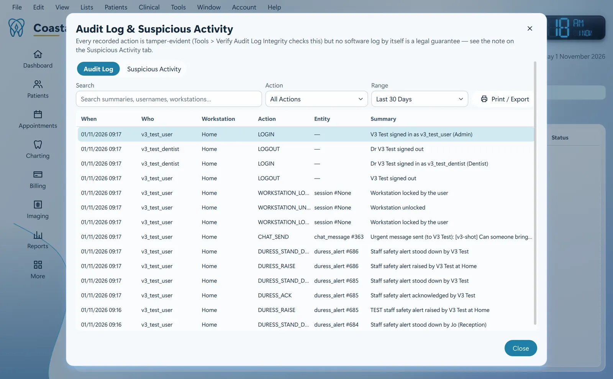
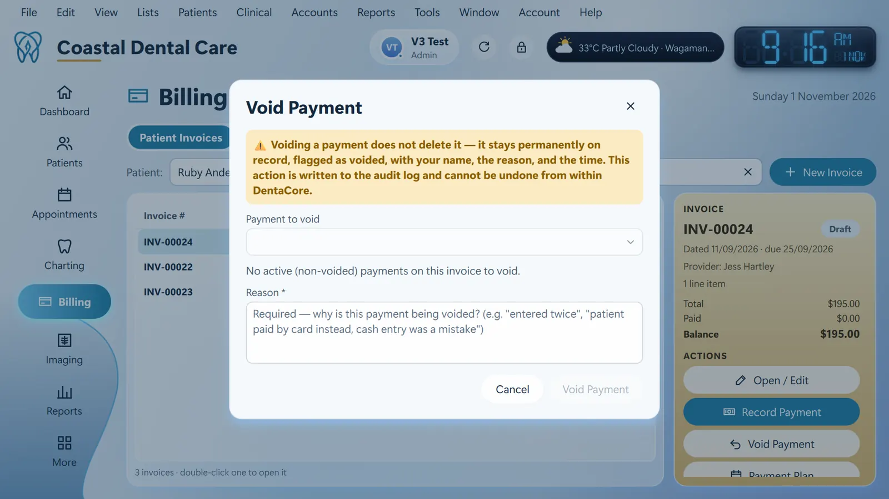
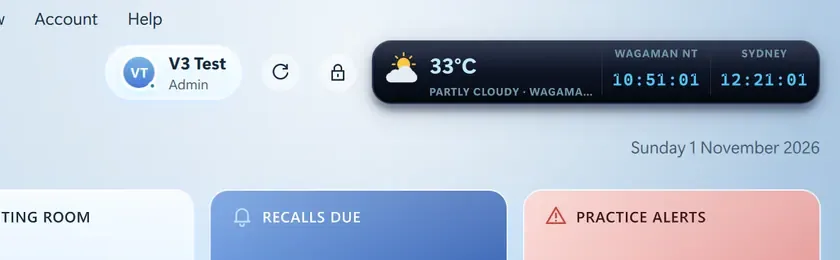

01 / 07 · Security & privacy
A tamper-evident audit log
Tools → Audit Log & Suspicious Activity
Every meaningful action is written to an append-only log: who did it, when and what changed.
- Creating or editing a patient, booking or cancelling, issuing an invoice, taking or voiding a payment, signing in and out.
- Each entry is chained to the one before it, so editing the database behind DentaCore's back breaks the chain and shows up.
- Verify Audit Log Integrity checks the whole chain on demand and says exactly where any break is.
- Suspicious activity is flagged for the Admin.

02 / 07 · Security & privacy
Access by role, and locked screens
Account · Settings → Security
People see only what their job needs, and an unattended computer locks itself.
- Four roles, with menus hidden that a role can't use.
- Personal logins, and a shared front-desk login that still records the real person.
- Lock workstations after a period of inactivity, and Ctrl+L to lock on demand.
- An urgent chat message waits behind a locked screen without showing its contents.

03 / 07 · Security & privacy
Controls on money
Billing
The classic till-fraud pattern is closed off.
- A payment is never deleted. A voided payment stays visible with who, when and why.
- Only an Admin can void.
- Invoices, payments and claims all leave audit lines.

04 / 07 · Security & privacy
Your data stays with you
By design
Patient records live on the practice's own database server, not in someone else's cloud.
- Images are stored on the practice's own shared folder.
- The Scribe transcribes on your own computer. Floor plans are read on your own computer.
- Optional outside services, such as translation, SMS and the weather, are off until you switch them on, and say so.
- Online forms, the portal and online booking run on the practice's network; whether they're reachable from the internet is your decision.

05 / 07 · Security & privacy
Backups and encryption
File → Backup Database
Back up the whole database, encrypted, and check it restores.
- A full, restorable backup of every table, plus local images if they aren't on a shared folder.
- Optional encryption with the practice's passphrase.
- Open an encrypted backup to check it.
- Workstations can be required to connect to the database over TLS.
- Every backup is recorded in the audit log.

06 / 07 · Security & privacy
Staff safety alert
Header → press and hold Refresh
A silent alarm for the front desk or any room.
- Press and hold Refresh to raise an alert on every other workstation.
- It says which room it came from, with the practice's own escalation.
- A green all-clear stands everyone down.
- Each workstation is set up with its location once, and every incident is logged.

07 / 07 · Security & privacy
A checklist before real patients go in
Setup guide
DentaCore's setup guide walks the practice through it.
- Start the database as a real practice, never a demo.
- Encrypt the disks on the server and every workstation.
- Require encrypted connections to the database.
- One Windows login per person, and lock down the shared images folder.
- Set up encrypted backups and test a restore.
- Turn on the idle lock, and have the setup reviewed before go-live.